조경기사 (2012-09-15 기출문제)
1과목: 조경사
1. 다음 중 중국, 한국, 일분의 정원을 조성한 시기가 모두 16세기에 해당하는 것은?
- 원명원ㆍ주합루ㆍ육의원
- 유원ㆍ옥호정ㆍ선동어소
- 졸정원ㆍ소쇄원ㆍ대덕사 대선원
- 창춘원ㆍ서석지ㆍ수학원이궁
(정답률: 77%)

2. 멕시코의 풍토와 자연에 대비되는 채색, 전통요소의 응용으로 작품성을 평가받고 있는 조경가는?
- 루이스 바라간
- 가렛 에크보
- 단 카일리
- 벌 막스
(정답률: 47%)
3. 다음 중 Andre Le Notre의 작품은?
- Central Park
- Villa Lante
- Taj Mahal
- Vaux-le-Viconte
(정답률: 81%)
4. 동양에서 시를 짓고 풍류놀이인 곡수연(曲水宴)을 하게 된 직접적인 요인으로 가장 적합한 것은?
- 풍류를 좋아하는 민족성 때문이다.
- 산악지형의 자연스러움과 물의 성질을 이용했기 때문이다.
- 왕희지의 난정고사에 근원을 두어 그 생활철학을 본받으려했기 때문이다.
- 자연적인 물의 흐름으로 음양사상을 적용했기 때문이다.
(정답률: 71%)
5. 중국 청대 원림의 특징 중 만수산 이궁와 관련 없는 사항은?
- 이화원
- 청의원
- 곤명호
- 어화원
(정답률: 54%)
6. 중국 명대(明代)말에 저술된 원야(園冶)에서 원림(園林)터 조성에 관해 설명한 부분은 다음 중 어느 부분인가?
- 상지(相地)
- 입기(立基)
- 옥우(屋宇)
- 철산(掇山)
(정답률: 59%)
7. 통일신라시대의 대표적 산지사찰인 화엄사(華嚴寺)에 대한 설명 중 틀린 것은?
- 회랑이 없는 점
- 입체적으로 형성된 공간구성
- 대웅전을 중심으로 좌우대칭이 아닌 점
- 계곡의 방향과 일치하는 동서축선을 기준으로 한 점
(정답률: 44%)
8. 연못의 형태가 잘못 연결된 것은?
- 선교장 - 방지방도
- 창덕궁 부용지 - 방지원도
- 윤중고택의 연못 - 방지원도
- 활래정 원지 - 방지원도
(정답률: 63%)
9. 20세기 초 미국의 레드번에서 영국의 하워드의 전원도시의 이상과 이념을 갖고 계획되었는데, 그 개념과 거리가 먼 사항은?
- 대가구(super block)를 설정
- 가로의 활성화를 위해 보도와 차도를 혼용
- 막다른 골목(cul-de-sac)의 설치로 근린성을 높이고 전원풍경을 창출
- 근린주구시설을 보도로써 연결
(정답률: 76%)
10. 취병(翠屛)에 대한 설명 가운데 틀린 것은?
- 전통놀이 시설이다.
- 덩굴식물을 올려놓는 것이다.
- 서양의 트레리스와 비슷하다.
- 옥호정도에 그러져 있다.
(정답률: 73%)
11. 경회루 원지에 대한 설명 중 맞는 것은?
- 경회루 진입 다리는 목교로 홍예형이다.
- 수원은 북쪽 호안가에 있는 샘이다.
- 출수구는 방지 서남쪽에 있다.
- 세섬에는 화목류로만 화려하게 장식하였다
(정답률: 55%)
12. 17세기 프랑스의 베르사이유 궁전 주축 끝 중요부분에 아폴로 분수(Fountain of Apollo)를 설치했는데 그 이유로서 가장 합당한 것은?
- 아폴로 조각이 그 장소에 합당
- 신화 속 아폴로의 의미 상징화
- 주축의 동경선(vista)을 강조하기 위한 목적
- 유리의 방에서 왕자의 가로(Tapis vert) 이후 주축의 좋은 시계(view)를 유지하기 위한 목적
(정답률: 64%)
13. 조선시대 별서정원은 입지적 특성상 임수형과 내륙형으로 구분할 수 있다. 다음 중 내륙형 정원이 아닌 것은?
- 명옥헌
- 암서재
- 남간정사
- 서석지
(정답률: 42%)
14. 프랑스의 풍경식 정원이 아닌 것은?
- 프티 트리아농(Petir Trianon)
- 에르메농빌르(Ermeononville)
- 무스코(Muskau)성
- 말메종(Malmason)
(정답률: 74%)
15. 다음 [보기]가 설명하는 곳은?
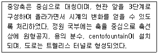
- Villa Lante
- Villa d'Este
- Villa Farnesiana
- Villa Medici
(정답률: 61%)
16. 클리포드(D. Clifford)의 주장에 의하면 어느 시대가 되어야 비로소 정원이 예술의 한 범주에 속하게 되었다고 하였는가?
- 고대 로마 제국 시대
- 10세기경 이슬람 대제국 시대
- 르네상스 시대
- 근대 산업혁명 시대
(정답률: 79%)
17. 수묵산수화 풍경을 묘사하고 원근법 원리를 잘 활용한 일본의 구상적 고산수식 정원은?
- 용안사 석정(石庭)
- 대덕사 대선원 동정(東庭)
- 은각사의 은사탄과 향월대
- 서본원사 호계(虎磎)의 정원
(정답률: 52%)
18. 동야정원에 관련된 저서에 대한 설명 중 맞는 것은?
- 계성은 원야에서 주인(조영자)보다 장인들의 중요성을 주장하였다.
- 산림경제 복거편에는 수목 식재방법이 소개된다.
- 양화소록은 조선시대 전기 조경관련 대표 저술서로 정원식물의 특성과 번식법 화분의 관리법 등이 소개된다.
- 홍만선(1643~1715)은 임원경제지리라는 농가생활에 필요한 백과전서를 소개했다.
(정답률: 62%)
19. 고대 로마 주택공간의 배치가 올바른 순으로 연결된 것은?
- Atrium → Peristylium → Xistus
- Atrium → Xistus → Peristylium
- Peristylium → Atrium → Xistus
- Peristylium → Xistus → Atrium
(정답률: 81%)
20. 화암수록의 화목 9등품제에 기록된 석죽(石竹)의 또 다른 이름은?
- 작약
- 봉선화
- 옥잠화
- 패랭이꽃
(정답률: 54%)
2과목: 조경계획
21. 하워드(E. Howard)의 전원도시에 대한 설명 중 틀린 것은?(오류 신고가 접수된 문제입니다. 반드시 정답과 해설을 확인하시기 바랍니다.)
- 사가지의 형태는 방사환상형, 중심부에 공공시설을 배치하도록 하였다.
- 하워드는 1903년 최초의 전원도시인 레치워드를 설계하였다.
- 위성도시의 발달은 하워드의 전원도시에서 유래하였다.
- 하워드는 전원도시의 수법을 도시, 전원, 전원도시의 3개의 자석(magnet)에 비유하였다.
(정답률: 61%)
22. 1970년 네덜란드의 델프트시에서 최초로 등장한 보차공존 도로는?
- 커뮤니티 도로
- 본 엘프(Woonerf)
- 쿨데삿(cul-de-sac)
- 트랜짓몰(transit mall)
(정답률: 53%)
23. 다음 중 공동주택의 일조 등의 확보를 위한 높이제한에 대한 설명 중 ( )안에 적합한 것은?
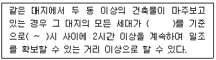
- 하지, 9~15
- 하지, 10~16
- 동지, 9~15
- 동지, 10~16
(정답률: 61%)
24. 고속도로조경 계획시 가용노선 선정의 고려사항을 도로이용도와 경제적 측면, 기술적 측면으로 구분할 수 있는데, 다음 중 기술적 측면의 조건에 포함되지 않는 항목은?
- 직선도로를 유지하도록 노선을 선정한다.
- 운수속도(運輸速度)가 가장 빠른 노선을 선정한다.
- 오르막 구배가 너무 급하게 되면 우회노선을 선정한다.
- 토량 이동(절ㆍ성토)이 균형을 이루는 노선을 선정한다.
(정답률: 76%)
25. 다음 중 어떤 지역에 해당되지 않는 것은?
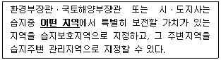
- 자연상태가 원시성을 유지하고 있거나 생물다양성이 풍부한 지역
- 희귀하거나 멸종위기에 처한 야생동ㆍ식물이 서식ㆍ 도래하는 지역
- 특이한 경관적ㆍ지형적 또는 지질학적 가치를 지닌 지역
- 습지생태계의 보전상태가 불량한 지역 중 인위적인 관리 등을 통하여 개선할 가치가 있는 지역
(정답률: 72%)
26. 자전거 이용시설의 구조ㆍ시설 기준에 관한 규칙상 자전거 도로의 폭은 하나의 차로를 기준으로 몇 미터 이상으로 하는가? (단, 지역의 상황 등에 따라 부득이하다고 인정되는 경우는 제외한다.)
- 1.25m
- 1.5m
- 1.95m
- 3.0m
(정답률: 81%)
27. 도시공원 및 녹지 등에 관한 법률 시행규칙상 체육공원에 설치할 수 없는 공원시설은?
- 야영장
- 경로당
- 낚시터
- 폭포
(정답률: 60%)
28. 축척이 1/50000인 지형도의 어떤 사면경사를 알기 위해 측정한 계측선 간의 도상 수평 최단거리가 1.4cm 이었을 때 이 두점의 사면 경사도는?
- 약 8%
- 약 10%
- 약 14%
- 약 20%
(정답률: 65%)
29. 조경계획을 위한 부지조사시 인문환경 조사항목에 속하는 것은?
- 지질
- 경관
- 토양
- 토지이용
(정답률: 75%)
30. 조경계획 및 설계 과정의 특성 중 잘못된 것은?
- 조경계획 과정은 크고 작은 의사결정 과정의 연속이다.
- 주어진 문제를 해결하기 합리적인 과정을 거친다.
- 창의적인 사고를 통하여 창조적 형태를 만들어 가는 과정을 거친다.
- 창의적인 과정과 합리적인 과정이 상호 독립적으로 존재한다.
(정답률: 71%)
31. 다음 중 도시 오픈스페이스의 역할로 가장 부적합한 것은?
- 도시개발의 조절
- 도시환경의 질 개선
- 다양한 형태의 문화생활의 억제
- 경작지 제공을 통한 도시농업 가능
(정답률: 74%)
32. 우리나라 국립공원 중 해안 및 해상을 주제로 지정된 국립공원은 몇 개소인가?
- 2개소
- 3개소
- 4개소
- 5개소
(정답률: 56%)
33. 기존의 레크레이션으로 기회에 참여 또는 소비하고 있는 수요를 무엇이라 하는가?
- 잠재수요
- 유도수요
- 유효수요
- 표출수요
(정답률: 66%)
34. Ashihara는 사람의 키에 대한 벽면이나 구조물의 높이에 의해서 폐쇄성이 결정된다고 했다. 다음 중 시각적으로 공간의 연속성이 있기 때문에 폐쇄성을 가질 정도는 되지 않으며, 기대앉고 싶은 정도인 것은?
- 180cm
- 150cm
- 120cm
- 60cm
(정답률: 57%)
35. 엔트로피(entropy)와 관련된 설명 중 옳지 않은 것은?
- 엔트로피란 변환과정에서 생성되는 이용할 수 없는 에너지의 척도이다.
- 엔트로피는 에너지 붕괴와 관련된 무질서도의 일반적인 지표로소 사용된다.
- 엔트로피 법칙은 어떤 에너지 변환도 집중형에서 분산형으로의 에너지의 쇠퇴 이외에는 자발적인 변환이 일어나지 않는다는 법칙으로 설명할 수 있다.
- 엔트로피 법칙은 다른 말로 열역학 제1법칙이라고 표현한다.
(정답률: 63%)
36. 대안 작성시 고려할 대상으로 가장 거리가 먼 것은?
- 시공의 경제성
- 공간의 합리성
- 토지의 기능성
- 설계의 편의성
(정답률: 64%)
37. 도로조경에서 교량부근의 계획수법과 관계가 가장 먼 것은?
- 진출부근에 명암순응식재
- 진출부근에 지표식재
- 곡선부 교량에는 배경에 교목식재
- 교대(橋臺)와 사면에는 침입방지식재
(정답률: 53%)
38. 국토의 계획 및 이용에 관한 법률에 의하여 관리지역을 구분, 지정하여 도시 관리계획으로 결정할 수 없는 지역은?
- 보전관리지역
- 경관관리지역
- 생산관리지역
- 계획관리지역
(정답률: 44%)
39. 다음과 같은 조건에서 소요되는 상업지역의 면적은 얼마인가?
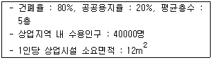
- 15ha
- 20ha
- 150ha
- 200ha
(정답률: 33%)
40. 다음 중 기능적 위계가 큰 도로의 순서대로 바르게 나열한 것은?
- 주간선도로 - 보조간선도로 - 국지도로 - 집산도로
- 집산도로 - 주간선도로 - 국지도로 - 보조간선도로
- 주간선도로 - 보조간선도로 - 집산도로 - 국지도로
- 주간선도로 - 집산도로 - 보조간선도로 - 국지도로
(정답률: 62%)
3과목: 조경설계
41. 조경설계기준상 토지이용 상충지역 완충녹지의 설계로 옳지 않은 것은?
- 완충녹지의 폭원은 최소 20m를 확보한다.
- 재해 발생시의 피난지로서 설치하는 녹지는 교목식재를 하고, 전체 녹화 면적률이 50% 정도가 되도록 한다.
- 임해매립지의 방풍ㆍ방조녹지대의 폭원은 200~300m를 확보한다.
- 보안, 접근 억제, 상충되는 토지이용의 조절 등을 목적으로 설치하는 녹지는 교목, 관목 또는 잔디, 기타 지피식물을 재식하고 녹화면적률이 80% 이상이 되도록 한다.
(정답률: 62%)
42. 다음 중 1/5000 지형도에서 주곡선의 간격은?
- 5m
- 10m
- 20m
- 50m
(정답률: 56%)
43. 자갈을 나타내는 재료 단면의 경계 표시는?
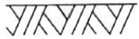
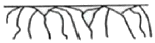
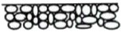
(정답률: 73%)
44. Lynch의 도시 이미지 형성에 기여하는 물리적인 요소로만 구성된 것은?
- path, skyline, form
- edge, district, skyline
- node, landmark, form
- path, edge, landmark
(정답률: 74%)
45. 교통표지판은 주로 색의 어떤 성질을 이용한 것인가?
- 시인성
- 관습성
- 대비성
- 잔상성
(정답률: 72%)
46. 다음 중 프로킨예 현상으로 밝은 곳에서 가장 밝게 느껴지는 색은?
- 노랑
- 보라
- 파랑
- 청록
(정답률: 56%)
47. 제도의 치수기입에 관한 설명으로 옳지 않은 것은?
- 치수는 특별히 명시하지 않는 한 마무리 치수는 표시한다.
- 치수 기입은 치수선 중앙 윗부분에 기입하는 것이 원칙이다.
- 협소한 간격이 연속될 때에는 인출선을 사용하여 치수를 쓴다.
- 치수의 단위는 cm를 원칙으로 하고, 이 때 단위기호는 쓰지 않는다.
(정답률: 74%)
48. 안전색채에서 안전색이 나타내는 일반적 의미로 맞는 것은?
- 빨강 : 정지, 주의
- 녹색 : 안전, 위생
- 노랑 : 주의, 위험
- 파랑 : 지시, 금지
(정답률: 53%)
49. 아파트 외곽 담장은 Altman이 구분한 인간의 영역중에 어느 영역에 구분하고 있는가?
- 1차영역과 2차영역
- 2차영역과 공적영역
- 1차영역과 공적영역
- 해당되는 영역이 없다.
(정답률: 57%)
50. 조경설계기준상 경사로 설계 내용으로 옳은 것은?
- 장애인 등의 통행이 가능한 경사로의 종단기울기는 1/18 이하로 한다.(단, 지형조건이 합당한 경우)
- 연속경사로의 길이 50m 마다 1.2m × 3m이상의 수평면으로 된 참을 설치하여야 한다.
- 휠체어 사용자가 통행할 수 있는 경사로의 유효폭은 100cm가 적당하다.
- 바닥 표면은 휠체어가 잘 미끄러질 재료를 채용하고, 울퉁불퉁하게 마감한다.
(정답률: 70%)
51. 어떤 물체를 제 3각법으로 투상했을 때 평면도로 올바른 것은?
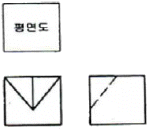
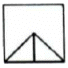
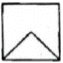
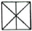
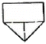
(정답률: 61%)
52. 다음의 노외주차장의 설치에 대한 계획기준 내용 중 ( )안에 알맞은 것은?
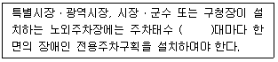
- 20
- 30
- 40
- 50
(정답률: 53%)
53. 먼셀시스템에서 10가지 기본 색상에 해당되지 않는 것은?
- Blue
- Green
- Red-Purple
- Yellow-Blue
(정답률: 56%)
54. 조형미의 원리 중 통일감이 부족하거나 평범한 분위기를 생기롭게 해주는 원리는?
- Proportion
- accent
- contrast
- balance
(정답률: 59%)
55. 사진 및 슬라이드를 이용한 경관평가의 장점으로 보기 어려운 것은?
- 시간 및 노력의 절약
- 관찰시간의 통제
- 관찰 조건 통제의 용이성
- 스케일감 및 입체감의 파악
(정답률: 58%)
56. 황금분할(golden section)에 관한 다음 설명 중 옳지 못한 것은?
- 이 비율을 응용으로 달팽이 등의 성장곡선을 작도 할 수 있다.
- 항수는 1 + √5 또는 √5 구형으로 작도할 수 있다.
- 피보나치(Fibonacci) 급수와는 유사하다.
- 하나의 선분을 대소 두 개의 선으로 나눌 때 큰 것과 작은 것의 길이의 비가 전체와 큰 것의 길이 비와 동일하다.
(정답률: 66%)
57. 옹벽이나 급경사지 등 추락 위험이 있는 놀이터, 휴게소, 산책로에 안전난간을 설계하고자 한다. 다음중 안전난간의 설명으로 틀린 것은?(단, 조경설계기준을 적용한다.)
- 폭은 10cm 이상으로 한다.
- 높이는 바닥의 마감면으로부터 90cm 이하로 한다.
- 위험이 많은 장소에 설치하는 간살의 간격은 안목치수 10cm 이하로 한다.
- 철근콘크리트 또는 강도 및 내구성이 있는 재료로 설계한다.
(정답률: 66%)
58. 다음과 같은 조건에 있는 건축물의 지상에 설치하여야 하는 조경 면적은 최소 얼마 이상이어야 하는가?
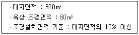
- 10m2
- 15m2
- 30m2
- 70m2
(정답률: 36%)
59. 색의 명시도에 가장 큰 영향을 끼치는 것은?
- 색상차
- 질감차
- 명도차
- 채도차
(정답률: 59%)
60. 다음 중 등고선과 단면의 관계가 옳지 않은 것은?
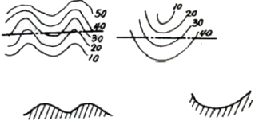
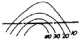
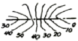
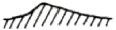
(정답률: 49%)
4과목: 조경식재
61. 다음 [보기]에서 설명하는 식물은?
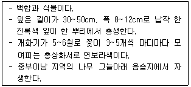
- 맥문동
- 꽃창포
- 노루귀
- 털머위
(정답률: 65%)
62. 0.2N/m2와 0.1N/m2의 음압을 발생하는 음원에 접근하여 방음식재를 한 결과 소음이 감쇠되어 수음점에서는 50dB의 음압도를 나타냈다. 수림대에 의해 감쇠된 소음은 몇 dB인가? (단, 두 음압이 상호간에 간섭이 없는 조건으로 한다.)
- 11dB
- 21dB
- 31dB
- 41dB
(정답률: 33%)
63. 가을이 되면 잎이 크산토필(xanthophyll) 등을 포함하는 카로티노이드(carotenoid)에 의하여 색깔이 변하는 수종은?
- 화살나무
- 은행나무
- 붉나무
- 마가목
(정답률: 62%)
64. 다음 중 자연풍경식의 식재 수법으로 많이 이용되는 형식은?
- 정삼각형식
- 이등변삼각형식
- 일직선의 3본형형식
- 부등변삼각형식
(정답률: 73%)
65. 다음 중 생존최소조도가 500Lux 정도로 가장 낮은 실내 식물은?
- 아스파라거스
- 맥문동
- 벤자민고무나무
- 테이블야자
(정답률: 49%)
66. 다음 중 하기(夏期)의 더위에 견디는 힘이 가장 좋은 것은?
- Zoysia grass 류
- Bent grass 류
- Kentucky bluegrass 류
- Ryegrass 류
(정답률: 63%)
67. 다음 수목 중 학명이 틀린 것은?
- 박태기 나무 : Cercis chinensis Bunge
- 갈참나무 : Quercus aliena Blume
- 은단풍 : Acer pictum L.
- 모과나무 : Chaenomeles sinensis Koehne
(정답률: 54%)
68. 경사면(法面) 피복용 초본류가 갖추어야 할 조건으로 틀린 것은?
- 건조와 척박지의 상황에 잘 견뎌야 한다.
- 단기간 내 발아와 피복이 가능해야 한다.
- 건조에 견디게 하기 위해 심근성 초본류의 선택이 바람직하다.
- 토착종의 종자는 생태계곤란의 우려가 있어 피해야 한다.
(정답률: 65%)
69. 다음 중 어린이놀이터 모래놀이터 근처에 식재하기 가장 적합한 수종은?
- Gleditsia japonica
- Pyracantha angustifolia
- Rhododendron yedoense for. poukhanense
- Poncirus trifoliata
(정답률: 52%)
70. 다음 중 조경 수종의 특성을 감안한 이용법으로 옳은 것은?
- Ginkgo biloba - 내공해성 - 가로수용
- Acer palmatum - 내화성 - 생울타리용
- Abies holophylla - 내건성 - 공장 군식용
- Lagerstroemia indica - 내한성 - 방설용
(정답률: 61%)
71. 다음 중 총상화서의 흰색 꽃이 5월경에 피는 속성 공원수로서 공해(대기오염)에 대해 강한 수종은?
- Prunus padus L. for. padus
- Prunus sargentii Rehder
- Lindera obtusiloba Bl.
- Prunus verecunda var. pendula
(정답률: 41%)
72. 토탄(土炭)이라고도 불리며, 한냉한 곳의 습지에 생육하는 갈대나 이끼가 흙 속에 묻혀 저온으로 인해 썩지 않고 반 가량 탄소화된 것을 캐올려 말린 경량토는?
- 피트(peat)
- 클링커(clinker)
- 펄라이트(pearlite)
- 버미큘라이트(vermiculite)
(정답률: 58%)
73. 다음 설명하는 수종은?
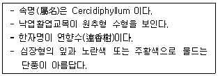
- 월계수
- 박태기나무
- 계수나무
- 다정큼나무
(정답률: 55%)
74. 다음 조경수를 중 양수끼리만 짝지어진 것은?
- 낙엽송, 소나무, 자작나무, 오동나무
- 독일가문비나무, 매화나무, 아왜나무, 미선나무
- 충층나무, 태산목, 구상나무, 꽝꽝나무
- 쪽동백나무, 개비자나무, 회양목, 팔손이
(정답률: 54%)
75. 질소가 식물이 이용할 수 있는 형태로 전환되는 질소고정(nitrogen fixation)을 할 수 있는 수목으로 적합하지 않는 종은?
- Sorbus alnifolia K.Koch
- Pureraria lobata Ohwi
- Elaegnus umbellata Thunb.
- Alnus japonica Steud.
(정답률: 39%)
76. 생울타리 및 차폐용 수종의 구비조건으로 적합하지 않은 것은?
- 지엽이 치밀할 것
- 아래가지가 오래도록 말라죽지 않을 것
- 맹아력이 강할 것
- 지하고가 높을 것
(정답률: 71%)
77. 다음의 열매 중 분포영역을 확장하기 위하여 바람 등의 물리적인 힘을 빌려 멀리 뻗어 가기 가장 어려운 것은?
- 시(翅)과류
- 장(裝)과류
- 협(莢)과류
- 수(수)과류
(정답률: 50%)
78. 방풍식재(防風植栽)를 했을 경우 방품림 후면은 풍속이 급격히 떨어지는데 임대(林帶)의 밀도가 최적(最適)일 때 풍속이 최저로 떨어지는 구간은? (단, 바람 위쪽에 대한 수고 기준으로 한다.)
- 수고의 5~10배 까지의 구간
- 수고의 10~15배 까지의 구간
- 수고의 10~20배 까지의 구간
- 수고의 20~25배 까지의 구간
(정답률: 41%)
79. 수목명, 학명 및 영명의 연결이 서로 옳지 않은 것은?
- 부용 - Hibiscus syriacus-Victor s Laurel
- 화살나무 - Euonymus alatus-Winged spindletree
- 가죽나무 - Ailanthis altissima-tree of Heaven
- 미선나무 - Abeliophyllum distichum-white Forsythia
(정답률: 55%)
80. 다음 중 자귀나무에 대한 설명으로 틀린 것은?
- 학명은 Albizia julibrissin Durazz.
- 삽목, 접목을 통해서 번식한다.
- 잎은 어긋나기하며, 짝수 2회 깃모양겹잎이다.
- 열매는 길이 15cm 정도의 편평한 협과에 5~6개 정도의 종자가 들어 있다.
(정답률: 38%)
5과목: 조경시공구조학
81. 시공계획 결정과정에서 검토할 중심과제가 아닌 것은?
- 입찰서
- 기본공정표
- 현장의 공사조건
- 발주자가 제시한 계약조건
(정답률: 63%)
82. 부지의 정지계획은 다양한 기능적ㆍ미적 목적을 달성하기 위하여 이루어진다. 다음 중 기능적인 목적이 아닌 것은?
- 지형침식 상태를 해결한다.
- 부지내의 배수상태를 조정한다.
- 계곡, 산복, 급경사지 등의 불리한 지형을 개량한다.
- 평탄한 대지에 자연적으로 흥미 있는 관심을 제공한다.
(정답률: 71%)
83. 다음 공사계약방식 중 공사수행방식에 따른 분류에 해당하지 않는 것은?
- 턴키계약
- 설계ㆍ시공일괄계약
- 설계ㆍ시공분리계약
- 실비정산보수가산계약
(정답률: 49%)
84. 어떤 결과(특성)에 영향을 미치는 원인(요인)과 그 결과와의 관계를 한눈에 알아볼 수 있도록 정리한 그림을 무엇이라 하는가?
- 산점도
- 상관도
- 파레토도
- 특성요인도
(정답률: 63%)
85. 내구성 및 강도가 크고 외관이 수려하나 함유광물의 열팽창 계수가 달라 내화성이 약한 석재로 외장, 내장, 구조재, 도로 포장재, 콘크리트 골재 등에 사용되는 것은?
- 대리석
- 응회암
- 화강암
- 화산암
(정답률: 72%)
86. 다음 보에 걸리는 휨 모멘트(bending moment)에 대한 해설로 옳은 것은?
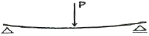
- 보의 상부는 인장력, 하부는 압축력을 받으며, 부(-)의 힘으로 작용한다.
- 보의 상부는 압축력, 하부는 인장력을 받으며, 부(-)의 힘으로 작용한다.
- 보의 상부는 압축력, 하부는 인장력을 받으며, 정(+)의 힘으로 작용한다.
- 보의 상부는 인장력, 하부는 압축력을 받으며, 정(+)의 힘으로 작용한다.
(정답률: 49%)
87. 목재의 탄성적 성질의 영향인자에 대한 설명 중 틀린 것은?
- 함수율이 감소되면 탄성계수는 작아진다.
- 탈리그닌화된 목섬유와 같이 리그닌이 없는 식물체는 강성이 작다.
- 목재비중이 커지면 외력에 대한 저항이 증가되므로 탄성계수는 목재비중에 비례하여 증가된다.
- 옹이가 꺼지는 영향은 옹이의 수, 크기 및 분포위치에 따라 달라지나, 강성에 미치는 영향을 정량화하기 어렵다.
(정답률: 37%)
88. 골재의 함수상태에 관한 설명으로 옳지 않은 것은?
- 공기 중 건조상태 : 실내에 방치한 경우 골재입자의 표면과 내부의 일부가 건조한 상태
- 습윤상태 : 골재입자의 내부에 물이 채워져 있고, 표면에도 물이 부착되어 있는 상태
- 절대건조상태 : 대기 중에서 골재의 표면이 완전히 건조된 상태
- 표면건조포화상태 : 골재입자의 표면에 물은 없으나 내부의 공극에는 물이 꽉 차 있는 상태
(정답률: 51%)
89. 도로 설계시 곡선부가 원곡선일 경우 중앙종거의 값은? (단, 곡선반경이 100m, 교각(交角)이 60° 임)
- 약 13.40m
- 약 26.80m
- 약 40.20m
- 약 50.00m
(정답률: 22%)
90. 표준테이프보다 5mm가 긴 50m 테이프로 잰 거리가 150m 이었다면 정확한 실제거리는?
- 149.985m
- 149.995m
- 150.015m
- 150.0⑤m
(정답률: 48%)
91. 지형의 특성에서 경사지의 높은 곳으로 간격이 높고, 낮은 곳으로 간격이 넓은 등고선은 어떤 경사를 나타내는가?
- 요(凹)경사지
- 철(凸)경사지
- 평지
- 등경사지
(정답률: 55%)
92. 조경수목의 종류와 규격표시방법의 연결이 맞는 것은?
- 수고 × 분얼수 : 회양목, 만경목
- 수고 × 흉고직경 : 은행나무, 메타세콰이아
- 수고 × 수관폭 : 잣나무, 감나무
- 수고 × 근원직경 : 화살나무, 가중나무
(정답률: 64%)
93. 서중콘크리트에 대한 설명으로 옳은 것은?
- 장기강도의 증진이 크다.
- 워커빌리티가 일정하게 유지된다.
- 콜드조인트가 쉽게 발생하지 않는다.
- 동일 슬럼프를 얻기 위한 단위수량이 많아진다.
(정답률: 33%)
94. 그림과 같은 단순보의 중앙점에 작용하는 전단력의 크기를 구하면 몇 kN인가?
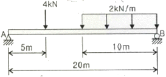
- 2
- 4
- 6
- 8
(정답률: 37%)
95. 다음 보에 대한 설명으로 옳지 않은 것은?
- 단순보에 일단이 회전지점이고 타단이 이동지점이다.
- 캔틸레버보는 일단이 고정지점이고 타단이 회전지점이다.
- 게르버보는 3개 이상의 지점으로 지지된다.
- 내민보는 지점의 구조는 단순보와 같으나 일단 또는 양단이 지점에서 밖으로 나와 있다.
(정답률: 46%)
96. 다음 합성수지 중 열경화성수지에 해당하는 것은?
- 프란수지
- 셀룰로이드
- 초산비닐수지
- 폴리아미드수지
(정답률: 40%)
97. 모래의 전단력 차이에 의해 모래의 불교란 시료를 채취하기 곤란한 경우 현지의 지반에서 직접 밀도를 측정하는 시험방법은?
- 전단시험
- 지내력시험
- 표준관입시험
- 베인테스트
(정답률: 49%)
98. 다음 중 아스팔트의 물리적 성질에 있어 아스팔트의 견고성 정도를 평가한 것은?
- 신도
- 침입도
- 내후성
- 인화점
(정답률: 47%)
99. 레벨의 불완전 조정에 의한 오차를 제거하는데 가장 유의해야 할 점은?
- 표척을 수직으로 세운다.
- 전시와 후시의 표척거리를 같게 한다.
- 관측시 기포가 항상 중앙에 오게 한다.
- 시준선 거리를 될 수 있는 한 짧게 한다.
(정답률: 48%)
100. 그림 A, C 사이에 연속된 담장이 가로막혔을 때의 수준측량시 C점의 지반고는? (단, A점이 지반고 10m이다)
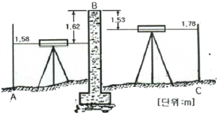
- 9.89m
- 10.62m
- 11.86m
- 12.54m
(정답률: 46%)
6과목: 조경관리론
101. 호르몬형의 선택 살초성을 지닌 이행형 제초제로서 잔디밭의 광역 잡초 방제용으로 주로 사용되는 것은?
- 이사디(2,4-D)
- 벤타존(bentazon)
- 푸로닐(propanil)
- 벤설푸론(bensulfuron)
(정답률: 70%)
102. 다음 중 무재해운동 추진시 무재해 시간의 산정 기준에 있어 건설현장 근로자의 실근로시간의 산정이 곤란한 경우 1일 몇 시간을 근로한 것으로 하는가?
- 8시간
- 9시간
- 10시간
- 12시간
(정답률: 47%)
103. 주요 잡초종 중 식물분류학적으로 분포비율이 높은 과(科)들로만 나열된 것은?
- 화본과, 콩과, 메꽃과
- 국화과, 방동사니과, 가지과
- 국화과, 화본과, 방동사니과
- 명아주과, 화본과, 십자화과
(정답률: 59%)
104. 벚나무 빗자루병에 대한 설명이 아닌 것은?
- 잔가지가 총생한다.
- 전신성 병은 아니다.
- 증상이 나타난 가지에는 꽃이 피지 않는다.
- 병원균은 파이트플라스마(phytoplasma)이다.
(정답률: 54%)
1⑤. 사과의 탄저병 등에 효과가 있는 카바메이트계 살균제는?
- 다조멧(dazomet) 입제
- 에토프로포스(ethoprophos) 입제
- 포스티아제이트(fosthiazate) 액제
- 티오파네이트메틸(thiophanate-methyl) 수화제
(정답률: 54%)
106. 제초제 계통의 일반적인 주요 작용기작이 잘못 연결된 것은?
- triazine계 - 광합성 저해
- diphenyl ether계 - 세포막 파괴
- dinitroaniline계 - 세포분열 억제
- sulfonylurea계 - 지질 생합성 억제
(정답률: 48%)
107. 다음 유희시설의 전반적인 유지관리 중 적절하지 않은 것은?
- 해안의 염분, 대기오염의 현저한 지역에서는 강력한 방청처리를 하거나 스테인레스제품을 사용한다.
- 사용재료에 균열발생 등 파손우려가 있거나 파손된 시설물은 사용하지 못하도록 한다.
- 바닥모래를 충분히 건조된 것으로서 어린이가 다치지 않도록 최대한 가는 모래를 깐다.
- 놀이터 내에 물이 고이는 곳이 없도록 모래면을 평탄하게 고른다.
(정답률: 57%)
108. 다음 중 전염성 병이 아닌 것은?
- 바이러스에 의한 병
- 진균에 의한 병
- 종자식물에 의한 병
- 토양 중의 유독물질에 의한 병
(정답률: 62%)
109. 조경수목 관리에서 단근(斷根)에 관한 설명으로 옳지 않은 것은?
- 뿌리의 노화현상을 방지한다.
- 꽃과 열매를 요하는 수목은 약하게 단근한다.
- 아랫가지의 발육을 좋게 한다.
- 수목의 도장을 억제한다.
(정답률: 42%)
110. 콘크리트재 부분을 보수할 때 사용하는 고무 (gum)압식 주입공법의 설명으로 옳지 않은 것은?
- 주입재는 24시간 이상 양생시켜야 한다.
- 주입구는 주입파이트의 중간에 고무튜브를 설치하는 것이다.
- 시멘트 반죽이나 고분자계 유제 혹은 고무유액을 혼입하는 것이 일반적이다.
- 고무 튜브를 직경에 맞도록 팽창시키고 튜브 내 압력이 3kg/cm 정도로 유지되도록 한다.
(정답률: 44%)
111. 다음 잔디 중 지상의 포복경으로 번식하는 잔디는?
- 파인 훼스큐
- 톨 훼스큐
- 크리핑 벤트그래스
- 페레니얼 라이그래스
(정답률: 61%)
112. 천공성 해충인 소나무좀의 월동 충태는?
- 알
- 유충
- 번데기
- 성충
(정답률: 35%)
113. 다음 공사 중에 발생되는 환경관리에 대한 설명중 옳지 않은 것은?
- 공사현장의 자생수목으로서 단지조성 등의 기반공사 후 활용이 가능하다고 판단되는 수목은 수급인이 굴취, 가식 등의 보호조치 후 활용하여도 된다.
- 공사로 인한 주변환경과 자연생태계의 훼손 및 오염을 최소화하도록 노력한다.
- 공사 중 법정 보호동식물 등이 발견되는 경우에는 감독자에게 보고하고 지시를 받는다.
- 공사현장의 공사전 자연식생은 생태조사를 통하여 환경특성과 군락구조를 확인하고 보존 또는 재생방법을 감독자와 협의한다.
(정답률: 70%)
114. 다음 중 아황산(SO2)가스에 대한 설명으로 옳은 것은?
- 광화학적 산화체이다.
- 지표식물은 글라디올러스이다.
- 산사나무는 아황산가스에 저항성이 강하다.
- 잎맥 사이 엽육조직이 갈색으로 변하여 마른다.
(정답률: 47%)
115. 공정표의 종류 중 작업의 관련성을 나타낼 수는 없으나 공사의 기성고를 표시하는데 편리한 공정표로 각부분공사의 상세를 나타내는 부분공정표에 적합하지만 보조적인 수단으로 사용되는 것은?
- 횡선식공정표
- 사선식공정표
- 진도관리곡선
- 네트워크공정표
(정답률: 46%)
116. 조경수의 해충방제를 위한 방법이 아닌 것은?
- 적저한 시비, 배수, 관수를 통하여 수목의 활력을 증진시킨다.
- 낙엽, 가지 등 지피물을 제거함으로써 해충의 월동 장소를 없앤다.
- 조경설계시 가급적 단일수종을 선택하여 해충에 대한 내성을 증대시킨다.
- 간벌 및 가지치기를 통해 병든가지를 제거하고 천공충의 서식지를 제거한다.
(정답률: 69%)
117. 유지관리계획 수립시 영향을 미치는 주 요인이 아닌 것은?
- 계획이나 설계목적
- 관리대상의 양과 질
- 관리대상의 특성
- 관리대상의 수익성
(정답률: 67%)
118. 비료의 유실양(流失量)이 가장 많은 시비법은?
- 엽면시비법
- 표토 시비법
- 토양내 시비법
- 수간주사법
(정답률: 61%)
119. 자외선에 의해 광화학산화반응으로 형성되는 2차 오염물질로서 광화학산물 중에서 가장 독성이 큰 오염 물질은?
- SO2
- PAN
- VOC
- NaCl
(정답률: 53%)
120. 토양수분 중 토양에 함유되어 있는 식물양분의 유실에 관여되는 것은?
- 중력수
- 흡습수
- 결합수
- 모세관수
(정답률: 46%)